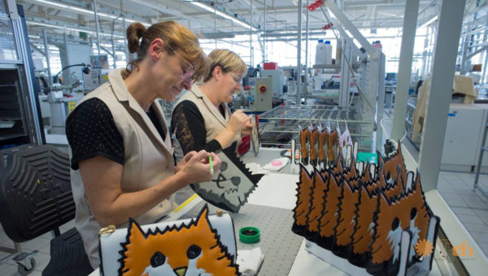

Fabricación de juguetes sostenibles
Diseñar, producir y vender juguetes elaborados exclusivamente con plásticos reciclados , garantizando la seguridad y la calidad de los productos para niños.
Regresar a serviciosDiseñar, producir y vender juguetes elaborados exclusivamente con plásticos reciclados , garantizando la seguridad y la calidad de los productos para niños.
Regresar a servicios